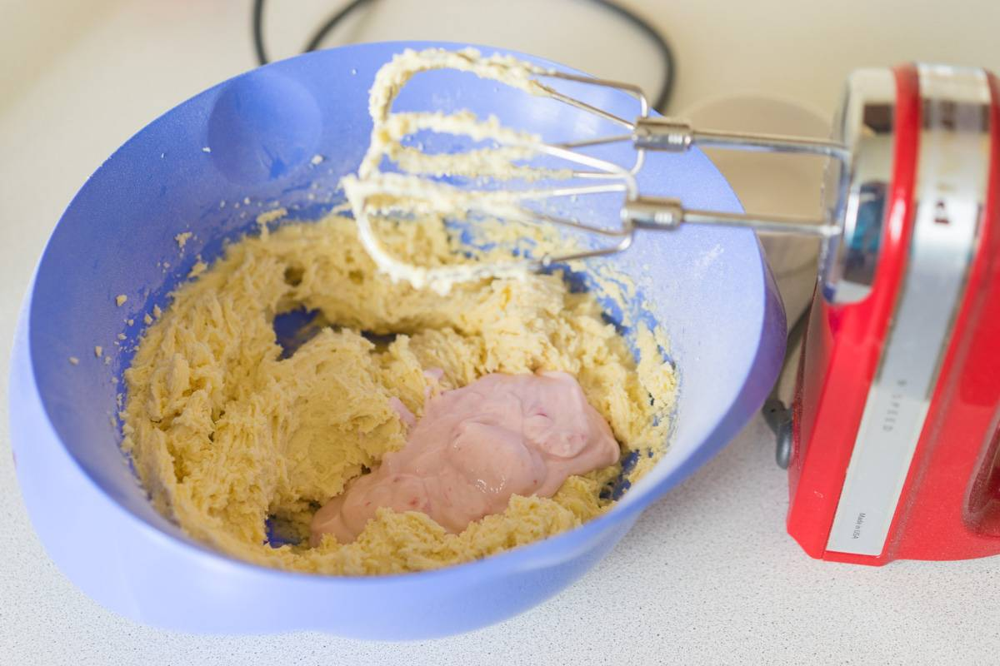

Baking this wonderful moist peach pie is easy.This is all without any complicated steps or ingredients, everything is simple. The main thing is to know how much of each ingredient to put into the bowl, and that's what I'm telling you here about. The cool thing about it is that we can make it with any flavor not only with peaches: berry, mango, or anything else.
This is what do you need.
Combine the sugar (190 g) and room temperature butter (115 g) in a bowl. You can use brown sugar, but I think it might be unnecessary here.
Beat with a mixer for about 3 minutes, until everything is well combined and the mixture slightly lightens in color.
Add two room-temperature eggs. Beat the mixture again.
Add the flour (210 g), baking powder (1/4 tsp), and baking soda (1/4 tsp).
Mix it all together, then pour in the fruit yogurt (120 g). I used peach yogurt. You can use plain yogurt, sour cream, or yogurt with other berry or fruit flavors. It's up to your taste.
I add a couple of teaspoons of vanilla extract. If you don't have it, don't add anything, but know that you're missing out on a lot of flavor.
Remove the pits from the peaches and finely chop them into small cubes. I ended up with 160 grams of cubes (two peaches). You can use canned peaches, BUT let them sit in a sieve to drain the excess juice.
Dust them with a spoonful of flour. This is to prevent the peaches from sinking to the bottom of the pan when they are in the batter. This technique works with other fillings as well. Fold them into the batter.
Prepare a French-style collar. You can use a regular round cake pan (16-20 cm), but I used a ‘donut’ pan. It doesn't matter if it's metal or silicone.
The batter will be quite thick, so add it to the pan in portions to help it spread out. It will rise a bit, so don’t fill the pan to the edges.
Bake at 175°C (350°F) for 40-70 minutes. The time depends on the shape and size of your pan. Check for doneness with a toothpick.
Now our pie is ready. To make the pie a bit more interesting, I drizzled it with a sour glaze (75 grams of powdered sugar and 1-2 tablespoons of lemon juice or water).